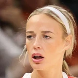

Silver initiated the contact through Cunningham's agents.
“I have talked to Adam Silver a couple of times, and I think he's a great guy,”

Every quote from Sophie Cunningham about Adam Silver in the archive, newest first. Each one links to its original source.
Silver initiated the contact through Cunningham's agents.
“I have talked to Adam Silver a couple of times, and I think he's a great guy,”
“(Cathy Engelbert's) done a lot of good things,but with where our league is trying to go, I feel like you just want someone who also wants that. That's just a hard position to be in, in her shoes, us as players ― we always want more, more, more because we see how good it can be, but ... that's up to Adam Silver at the end of the day.”